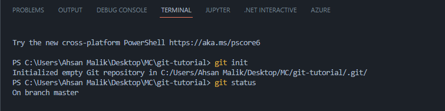
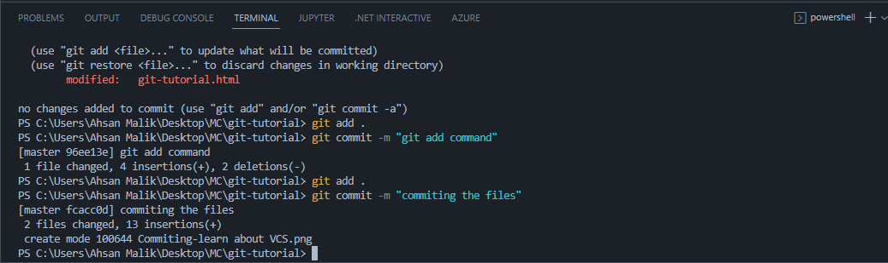
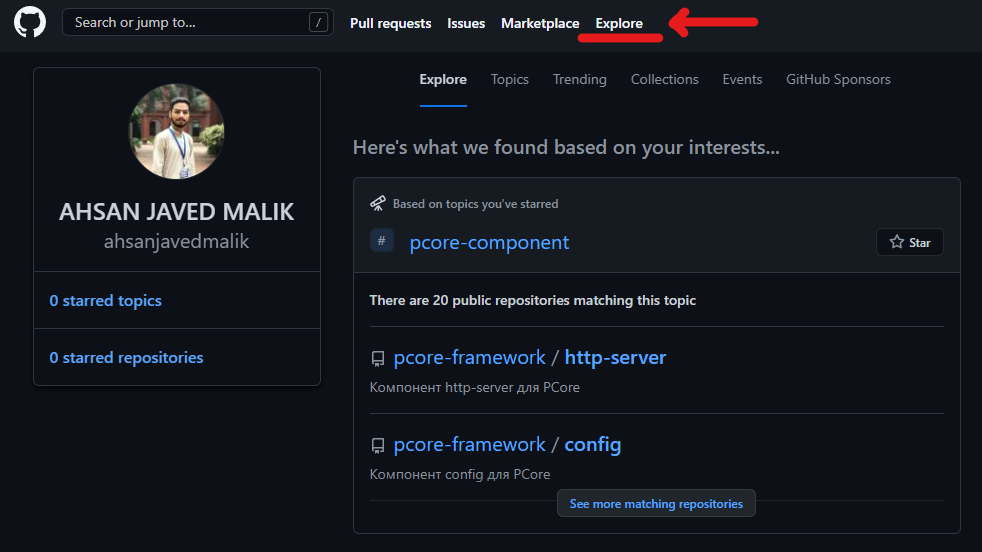
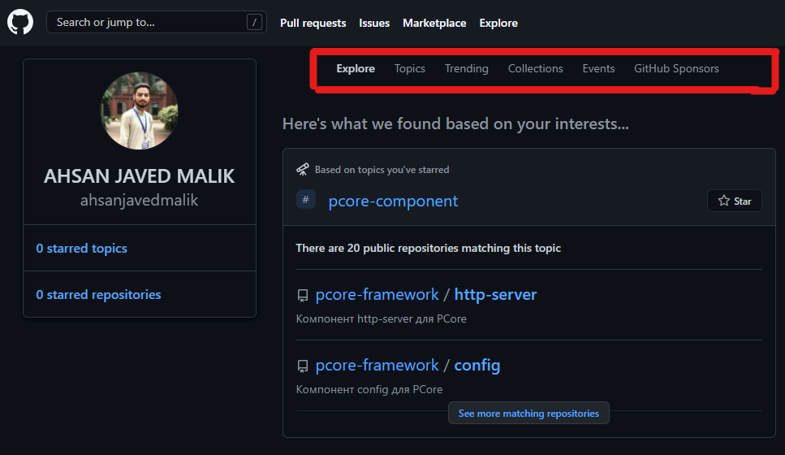
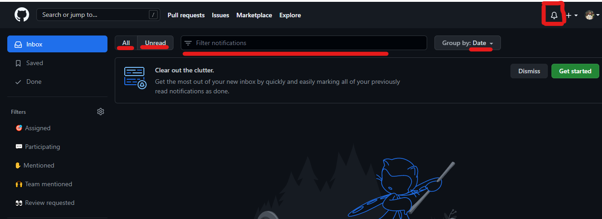
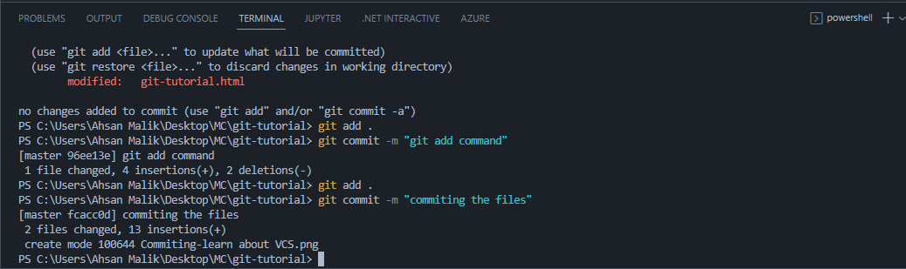
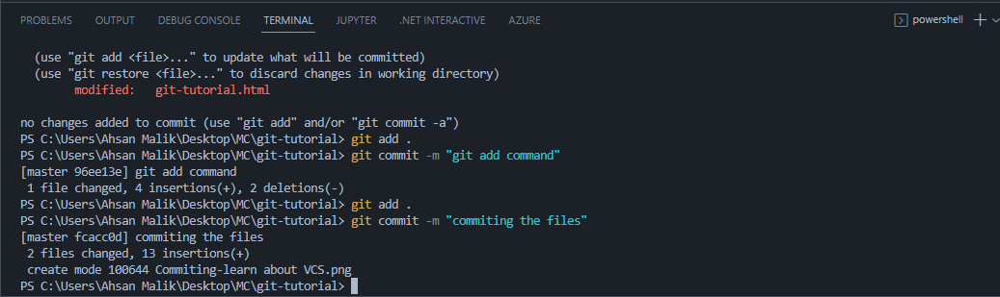

A (VCS) version control system tracks changes
to a file or set of files over time. The most
common type is a centralized VCS, which uses a
server to store all the versions of a file.
Developers can check out a file from the server,
make changes, and check the file back in.
About GIT - VCS
Git is free and open source software for distributed
version control: tracking changes in any set of files,
usually used for coordinating work among programmers
collaboratively developing source code during software
development. Its goals include speed, data integrity,
and support for distributed, non-linear workflows.
Git Basic Concepts
Create an Account on GitHub
Sign in
Initialize the Git Repository
View the Repository Status
Stage a Snapshot
Commit the Snapshot
View the Repository Status
View the Repository History
Configure Git
Explore the Repository’s History
Git Pull, log, online editing
Branching
Merging
delete
Clone a Repository
1- Create an Account on GitHub
Open your Browser and write github in the search bar.
Click on the link.
Now, Click on the Sign-Up butto to create a new account.
Next step is to enter your email adress.
After entering email press the continue button. Now you have to enter a strong Password..
Now you have to confirm your email adress.
You have successfully created your account.
Next step, You have to sign in.
Enter your credentials in order to login.
2- Initializing the Git Repository
Git Init
The git init command creates a new Git repository. It can be used to convert an existing, unversioned project to a Git
repository or initialize a new, empty repository. Most other Git commands are not available outside of an initialized
repository, so this is usually the first command you'll run in a new project.

3- View the Repository Status
git status
When you are using Git, you will frequently want to check the status of your repository. To do this, run the command git
status , which displays a list of the files that have been modified since the last time changes were saved.
4- Add Files to Repository
git add
git add. The git add command adds a change in the working directory to the staging area. It tells Git that you
want to
include updates to a particular file in the next commit. However, git add doesn't really affect the repository
in any
significant way—changes are not actually recorded until you run git commit.
5- Commit the files
git commit
The git commit command captures a snapshot of the project's currently staged changes. Committed snapshots can be thought
of as “safe” versions of a project—Git will never change them unless you explicitly ask it to.

5- Exploring the GitHub
GitHub Dashboard
The dashboard provides interactive plots on model performance, feature importances, feature contributions to individual
predictions, "what if" analysis, partial dependence plots, SHAP (interaction) values, visualisation of individual
decision trees, etc.
You can visit your personal dashboard to keep track of issues and pull requests you're working on or following, navigate
to your top repositories and team pages, stay updated on recent activities in organizations and repositories you're
subscribed to, and explore recommended repositories.
Explore
Explore is your guide to finding your next project, catching up with what's trending, and connecting with the GitHub
community.


Notifications
In the left sidebar, under the list of repositories, use the "Manage notifications" drop-down to click Notification
settings. On the notifications settings page, choose how you receive notifications when: There are updates in
repositories or team discussions you're watching or in a conversation you're participating in.
--> In this section we have:
Read notifications
Unread notifications
Search options

6- Repository in GitHub
Create a repository in GitHub
In the upper-right corner of any page, use the drop-down menu, and select New repository.
Type a short, memorable name for your repository.
Optionally, add a description of your repository.
Choose a repository visibility.
Select Initialize this repository with a README.
Click Create repository.
7- URL of Reposiotry on you account
URL of Reposiotry
A remote URL is Git's fancy way of saying "the place where your code is stored." That URL could be your repository on
GitHub, or another user's fork, or even on a completely different server. You can only push to two types of URL
addresses: An HTTPS URL like https://github.com/user/repo.git.
On the GitHub website, click on you repository of interest.
Locate the green button named Code and click on it. The GitHub URL will appear.
Copy the GitHub URL.
Open a Git client such as the BASH shell or GitHub Desktop on your local machine.
Use the GitHub URL to clone the remote repo.
8- Clone a repository
Git Clone
git clone is primarily used to point to an existing repo and make a clone or copy of that repo at in a new directory, at
another location. The original repository can be located on the local filesystem or on remote machine accessible
supported protocols. The git clone command copies an existing Git repository.
On GitHub.com
navigate to the main page of the repository.
Above the list of files, click Code
Click Open with GitHub Desktop to clone and open the repository with GitHub Desktop.
Follow the prompts in GitHub Desktop to complete the clone.


 
